CuriosityCommitmentCreativity
Dune
buggy.
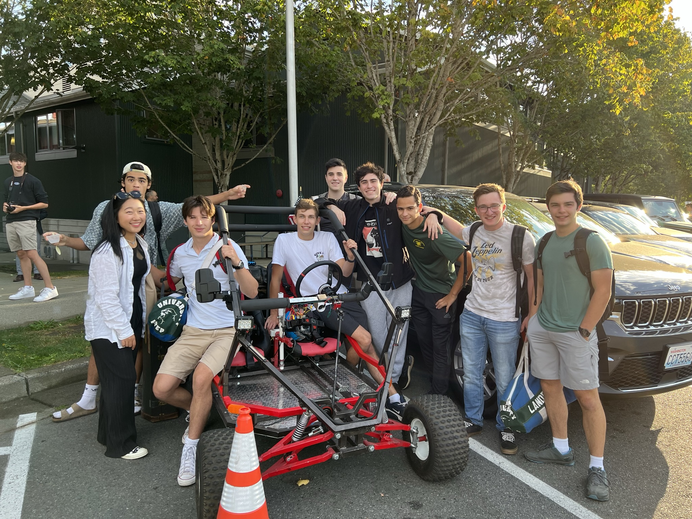
- 55hpPower
- 2Seats
- 350lbsWeight
- 6Gears
- 70+mphTop speed
- 14Total collaborators
From an idea to the first day of school
The stages.
-
01/ Planning
Decided on the design, ordered steel and other essential components, and rallied friends around the project to build a team.
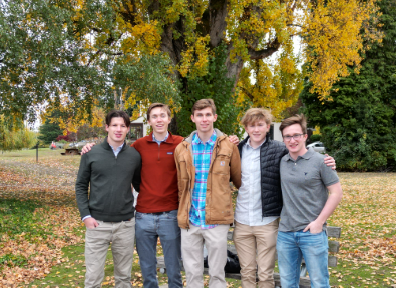
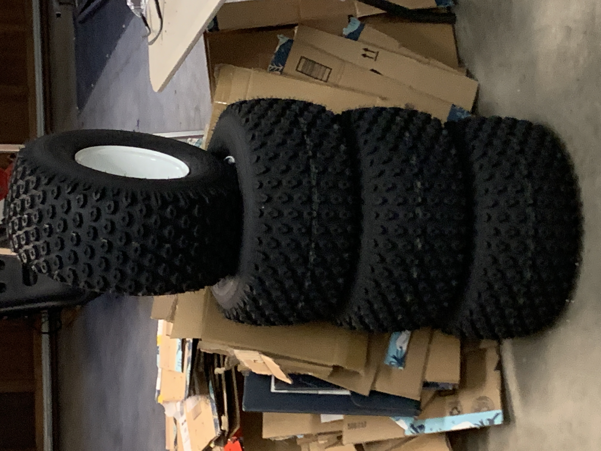
Skills Developed
- Design planning
- Materials and parts sourcing
- Team building
-
02/ Cutting & welding
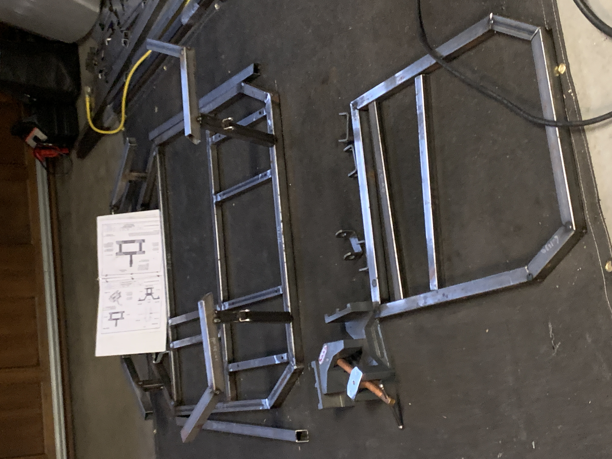
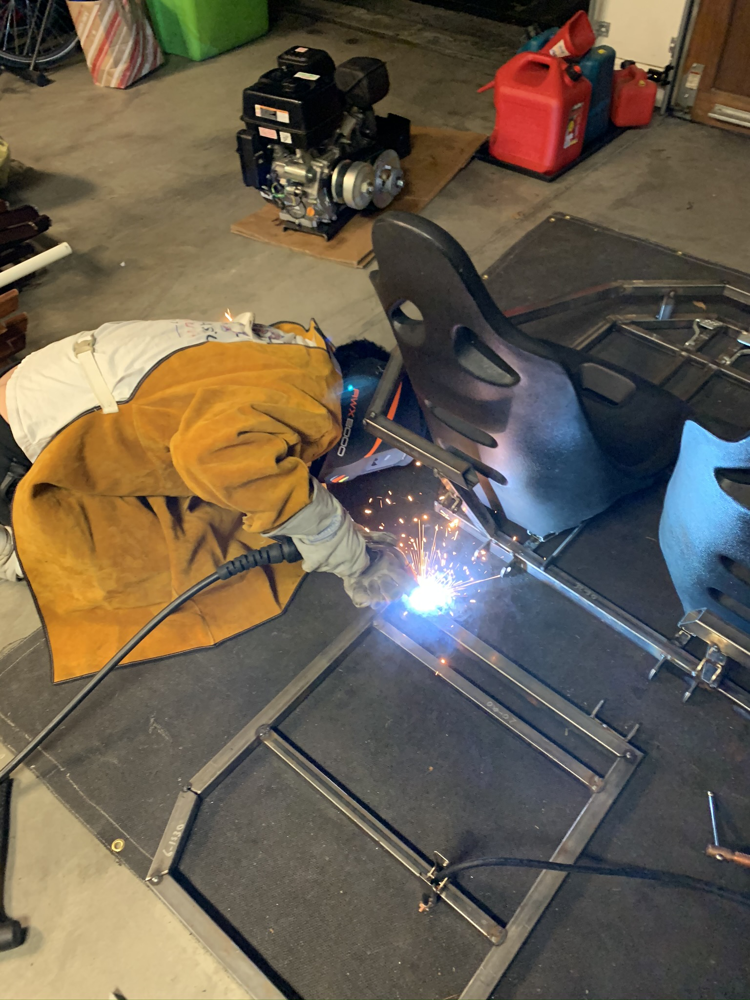
Skills Developed
- Measuring and cutting steel
- Welding
- Frame fabrication
-
03/ Assembly & testing
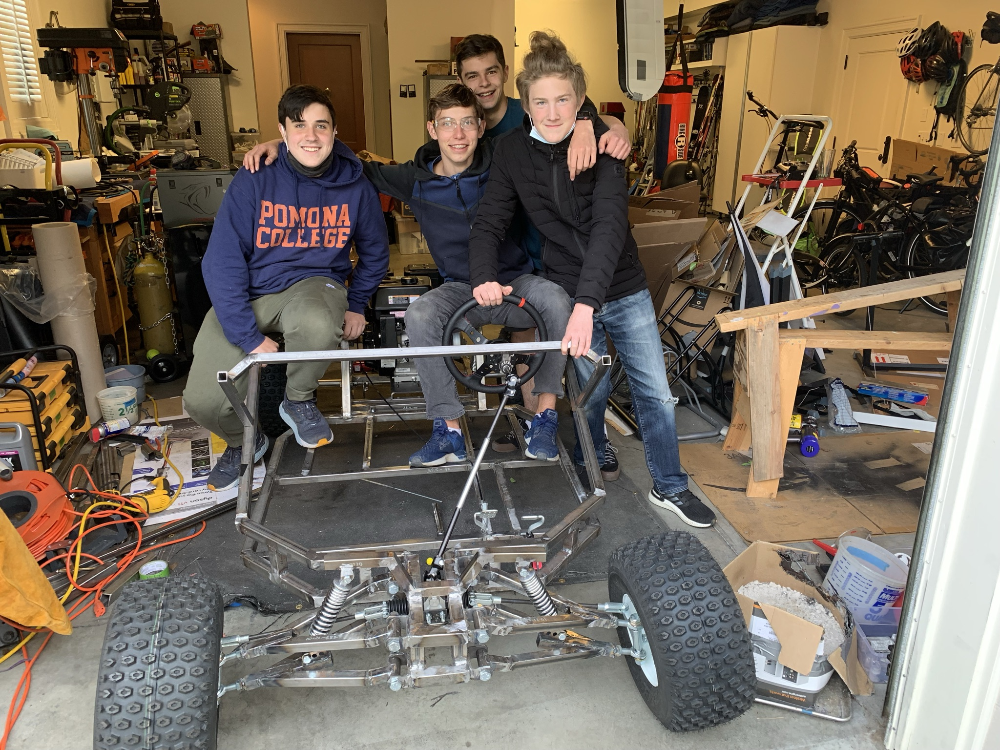
Skills Developed
- Mechanical assembly
- Shakedown testing
- Troubleshooting
-
04/ Fixes & paint
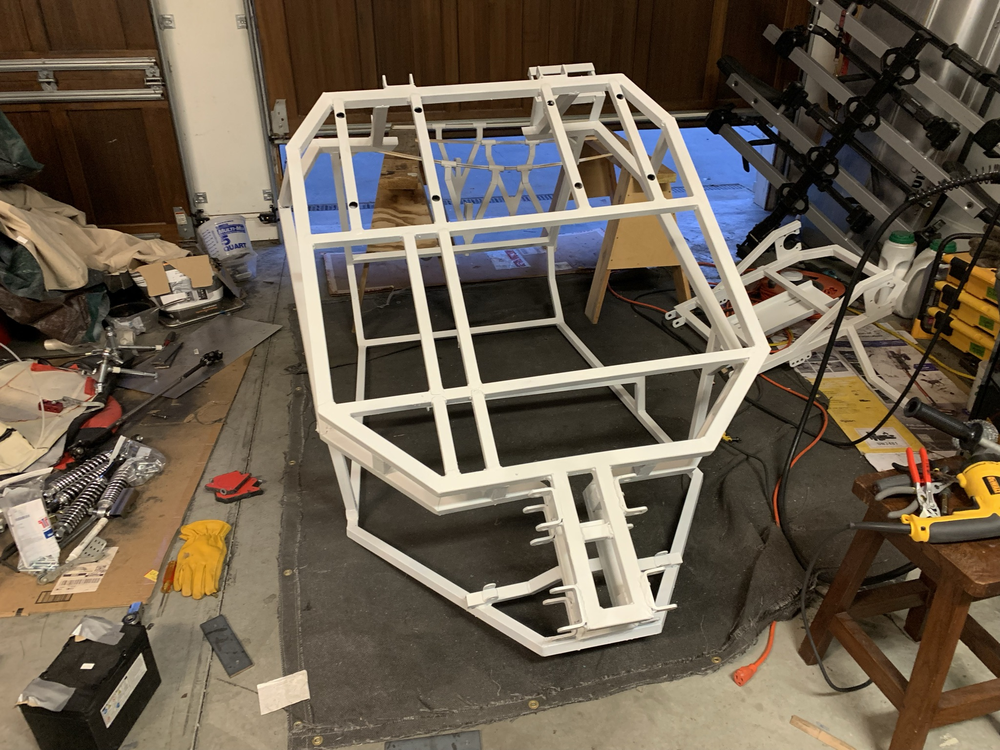
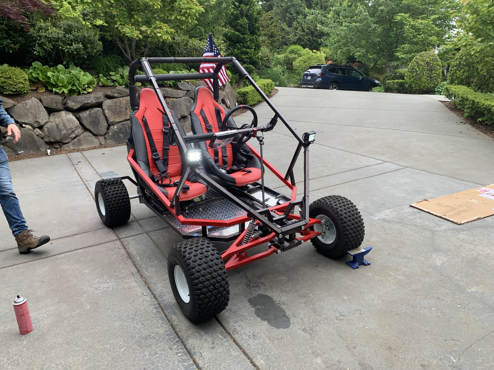
Skills Developed
- Iterating from test results
- Surface preparation
- Paint and finishing
-
05/ The first real test drive
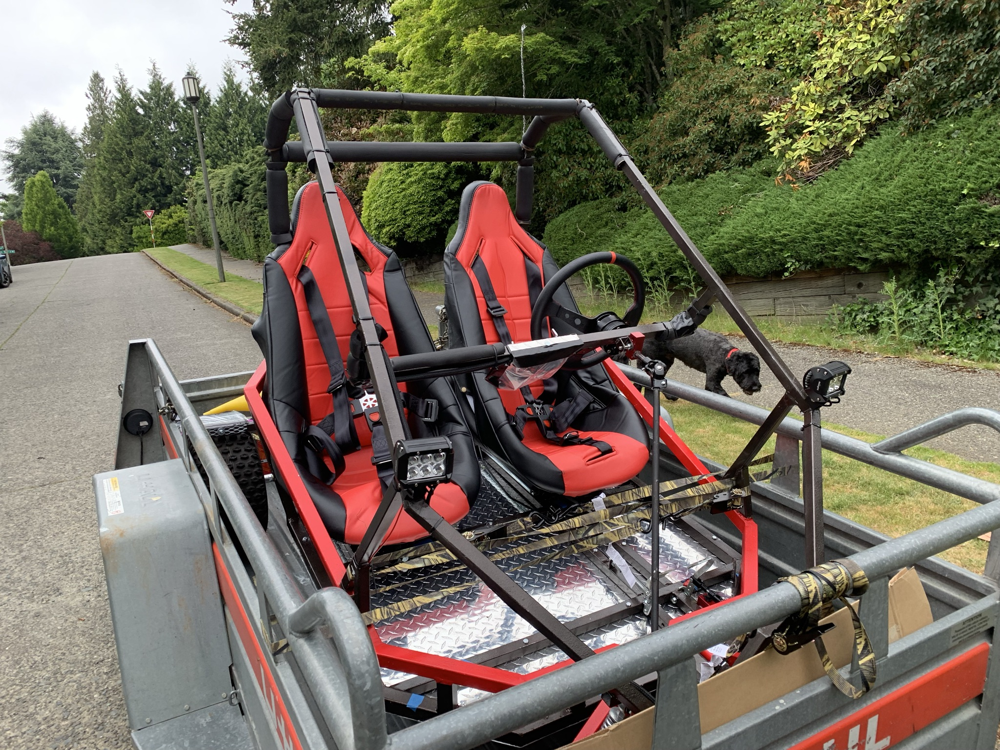
Skills Developed
- Field testing
- Evaluating handling
- Identifying improvements
-
06/ Engine blows up. Engine swap.
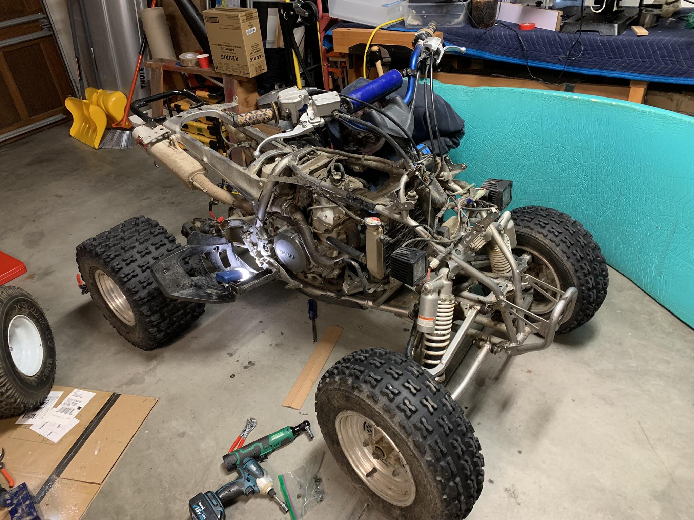
Skills Developed
- Engine diagnostics
- Powertrain integration
- Adapting the build after failure
-
07/ Driving to school for the first day of senior year
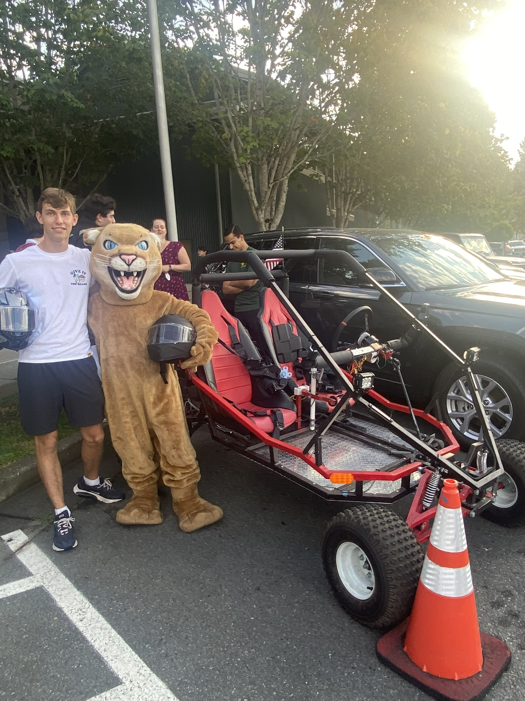
Skills Developed
- Final readiness checks
- Driving the buggy in real conditions
- Presenting the finished build
The story
I wanted to build something amazing, and a dune buggy was the idea that stuck. My friends and I spent six months building it together. We came away with a buggy capable of 70 mph, built from scratch with our curiosity and creativity.
RC jet ski.
I took apart an RC car and used it as the starting point for a jet ski I could design, build, and test myself.
From RC car to jet ski
I drove the donor car before taking it apart to see what I could reuse.
Designing the hull and testing impellers
I designed the jet ski and made several impellers, testing different designs to see which worked best.
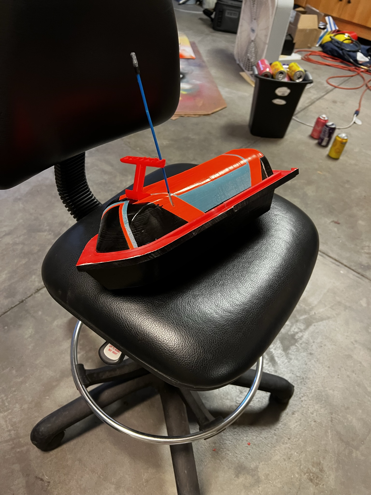